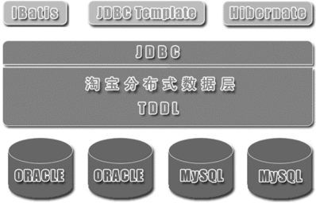
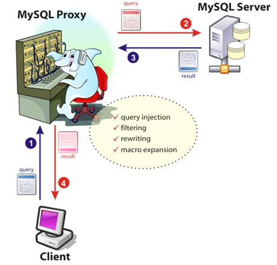

14 | 高性能数据库集群：读写分离
“从 0 开始学架构”专栏已经更新了 13 期，从各个方面阐述了架构设计相关的理论和流程，包括架构设计起源、架构设计的目的、常见架构复杂度分析、架构设计原则、架构设计流程等，掌握这些知识是做好架构设计的基础。
在具体的实践过程中，为了更快、更好地设计出优秀的架构，除了掌握这些基础知识外，还需要掌握业界已经成熟的各种架构模式。大部分情况下，我们做架构设计主要都是基于已有的成熟模式，结合业务和团队的具体情况，进行一定的优化或者调整；即使少部分情况我们需要进行较大的创新，前提也是需要对已有的各种架构模式和技术非常熟悉。
接下来，我将逐一介绍最常见的“高性能架构模式”“高可用架构模式”“可扩展架构模式”，这些模式可能你之前大概了解过，但其实每个方案里面都有很多细节，只有深入的理解这些细节才能理解常见的架构模式，进而设计出优秀的架构。
虽然近十年来各种存储技术飞速发展，但关系数据库由于其 ACID 的特性和功能强大的 SQL 查询，目前还是各种业务系统中关键和核心的存储系统，很多场景下高性能的设计最核心的部分就是关系数据库的设计。
不管是为了满足业务发展的需要，还是为了提升自己的竞争力，关系数据库厂商（Oracle、DB2、MySQL 等）在优化和提升单个数据库服务器的性能方面也做了非常多的技术优化和改进。但业务发展速度和数据增长速度，远远超出数据库厂商的优化速度，尤其是互联网业务兴起之后，海量用户加上海量数据的特点，单个数据库服务器已经难以满足业务需要，必须考虑数据库集群的方式来提升性能。
从今天开始，我会分几期来介绍高性能数据库集群。高性能数据库集群的第一种方式是“读写分离”，其本质是将访问压力分散到集群中的多个节点，但是没有分散存储压力；第二种方式是“分库分表”，既可以分散访问压力，又可以分散存储压力。先来看看“读写分离”，下一期我再介绍“分库分表”。
读写分离原理
读写分离的基本原理是将数据库读写操作分散到不同的节点上，下面是其基本架构图。

读写分离的基本实现是：
- 数据库服务器搭建主从集群，一主一从、一主多从都可以。
- 数据库主机负责读写操作，从机只负责读操作。
- 数据库主机通过复制将数据同步到从机，每台数据库服务器都存储了所有的业务数据。
- 业务服务器将写操作发给数据库主机，将读操作发给数据库从机。
需要注意的是，这里用的是“主从集群”，而不是“主备集群”。“从机”的“从”可以理解为“仆从”，仆从是要帮主人干活的，“从机”是需要提供读数据的功能的；而“备机”一般被认为仅仅提供备份功能，不提供访问功能。所以使用“主从”还是“主备”，是要看场景的，这两个词并不是完全等同的。
读写分离的实现逻辑并不复杂，但有两个细节点将引入设计复杂度：主从复制延迟和分配机制。
复制延迟
以 MySQL 为例，主从复制延迟可能达到 1 秒，如果有大量数据同步，延迟 1 分钟也是有可能的。主从复制延迟会带来一个问题：如果业务服务器将数据写入到数据库主服务器后立刻（1 秒内）进行读取，此时读操作访问的是从机，主机还没有将数据复制过来，到从机读取数据是读不到最新数据的，业务上就可能出现问题。例如，用户刚注册完后立刻登录，业务服务器会提示他“你还没有注册”，而用户明明刚才已经注册成功了。
解决主从复制延迟有几种常见的方法：
\1. 写操作后的读操作指定发给数据库主服务器
例如，注册账号完成后，登录时读取账号的读操作也发给数据库主服务器。这种方式和业务强绑定，对业务的侵入和影响较大，如果哪个新来的程序员不知道这样写代码，就会导致一个 bug。
\2. 读从机失败后再读一次主机
这就是通常所说的“二次读取”，二次读取和业务无绑定，只需要对底层数据库访问的 API 进行封装即可，实现代价较小，不足之处在于如果有很多二次读取，将大大增加主机的读操作压力。例如，黑客暴力破解账号，会导致大量的二次读取操作，主机可能顶不住读操作的压力从而崩溃。
\3. 关键业务读写操作全部指向主机，非关键业务采用读写分离
例如，对于一个用户管理系统来说，注册 + 登录的业务读写操作全部访问主机，用户的介绍、爱好、等级等业务，可以采用读写分离，因为即使用户改了自己的自我介绍，在查询时却看到了自我介绍还是旧的，业务影响与不能登录相比就小很多，还可以忍受。
分配机制
将读写操作区分开来，然后访问不同的数据库服务器，一般有两种方式：程序代码封装和中间件封装。
\1. 程序代码封装
程序代码封装指在代码中抽象一个数据访问层（所以有的文章也称这种方式为“中间层封装”），实现读写操作分离和数据库服务器连接的管理。例如，基于 Hibernate 进行简单封装，就可以实现读写分离，基本架构是：

程序代码封装的方式具备几个特点：
- 实现简单，而且可以根据业务做较多定制化的功能。
- 每个编程语言都需要自己实现一次，无法通用，如果一个业务包含多个编程语言写的多个子系统，则重复开发的工作量比较大。
- 故障情况下，如果主从发生切换，则可能需要所有系统都修改配置并重启。
目前开源的实现方案中，淘宝的 TDDL（Taobao Distributed Data Layer，外号: 头都大了）是比较有名的。它是一个通用数据访问层，所有功能封装在 jar 包中提供给业务代码调用。其基本原理是一个基于集中式配置的 jdbc datasource 实现，具有主备、读写分离、动态数据库配置等功能，基本架构是：

（http://1.im.guokr.com/0Y5YjfjQ8eGOzeskpen2mlNIYA_b7DBLbGT0YHyUiLFZAgAAgwEAAFBO.png）
\2. 中间件封装
中间件封装指的是独立一套系统出来，实现读写操作分离和数据库服务器连接的管理。中间件对业务服务器提供 SQL 兼容的协议，业务服务器无须自己进行读写分离。对于业务服务器来说，访问中间件和访问数据库没有区别，事实上在业务服务器看来，中间件就是一个数据库服务器。其基本架构是：

数据库中间件的方式具备的特点是：
- 能够支持多种编程语言，因为数据库中间件对业务服务器提供的是标准 SQL 接口。
- 数据库中间件要支持完整的 SQL 语法和数据库服务器的协议（例如，MySQL 客户端和服务器的连接协议），实现比较复杂，细节特别多，很容易出现 bug，需要较长的时间才能稳定。
- 数据库中间件自己不执行真正的读写操作，但所有的数据库操作请求都要经过中间件，中间件的性能要求也很高。
- 数据库主从切换对业务服务器无感知，数据库中间件可以探测数据库服务器的主从状态。例如，向某个测试表写入一条数据，成功的就是主机，失败的就是从机。
由于数据库中间件的复杂度要比程序代码封装高出一个数量级，一般情况下建议采用程序语言封装的方式，或者使用成熟的开源数据库中间件。如果是大公司，可以投入人力去实现数据库中间件，因为这个系统一旦做好，接入的业务系统越多，节省的程序开发投入就越多，价值也越大。
目前的开源数据库中间件方案中，MySQL 官方先是提供了 MySQL Proxy，但 MySQL Proxy 一直没有正式 GA，现在 MySQL 官方推荐 MySQL Router。MySQL Router 的主要功能有读写分离、故障自动切换、负载均衡、连接池等，其基本架构如下：

（https://dev.mysql.com/doc/mysql-router/2.1/en/images/mysql-router-positioning.png）
奇虎 360 公司也开源了自己的数据库中间件 Atlas，Atlas 是基于 MySQL Proxy 实现的，基本架构如下：

以下是官方介绍，更多内容你可以参考这里。
Atlas 是一个位于应用程序与 MySQL 之间中间件。在后端 DB 看来，Atlas 相当于连接它的客户端，在前端应用看来，Atlas 相当于一个 DB。Atlas 作为服务端与应用程序通信，它实现了 MySQL 的客户端和服务端协议，同时作为客户端与 MySQL 通信。它对应用程序屏蔽了 DB 的细节，同时为了降低 MySQL 负担，它还维护了连接池。
小结
今天我为你讲了读写分离方式的原理，以及两个设计复杂度：复制延迟和分配机制，希望对你有所帮助。
这就是今天的全部内容，留一道思考题给你吧，数据库读写分离一般应用于什么场景？能支撑多大的业务规模？